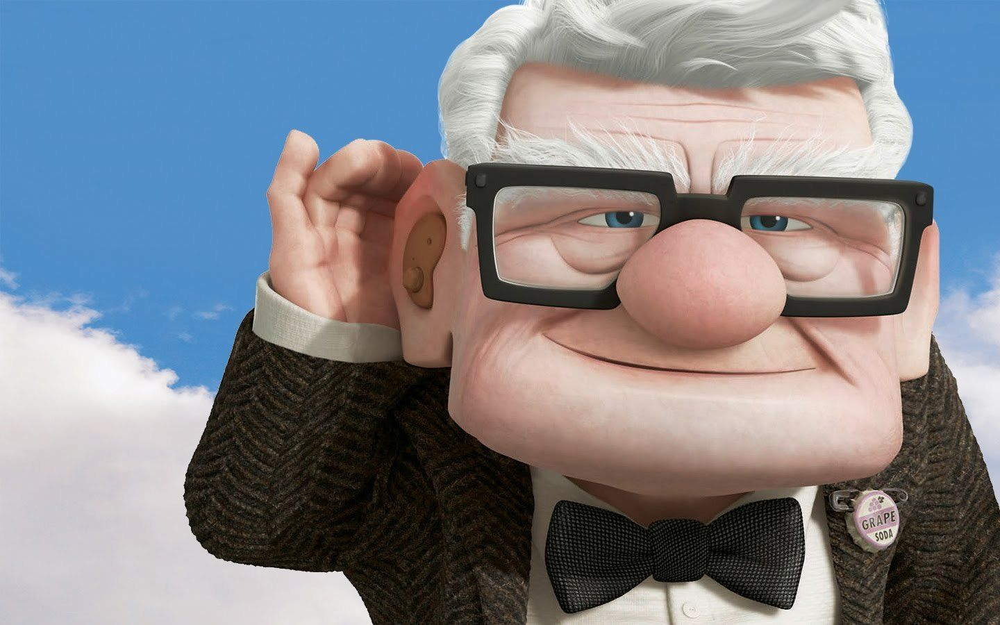

Amor Mío
No sé por donde empezar, tengo muchas emociones juntas que es muy difícil expresarlo en una carta pero hare el intento jejeje, como bien sabes este año 2022 para mí ha sido un año de bastantes cambios en mi vida, primero en lo profesional se me presento un nuevo trabajo y desafió pero con una gran diferencia a mis otros trabajos anteriores y es que por fin iba a trabajar en lo que me gusta, en lo que siento que nací para hacer, ¡valió la pena tanto estudio!, segundo el cambio de casa, fueron 6 años en mi anterior hogar, muchos recuerdos hermosos como algunos dolorosos, (la mayoría muy bonitos recuerdos) pero ya no me sentía a gusto en ese lugar, teniendo como un objetivo el mudarme y partir de cero con nuevas energía, ¡también se logro!, por supuesto con la ayuda de Dios y el inmenso apoyo de mi familia, ¡amo mucho a mi familia! y por ultimo el haberte conocido, ¡síííí te conocí!, no sabes lo maravilloso que ha sido para mí conocerte y volver enamorarme de una persona, aun cuando al principio tenía mucho miedo de volver a sentirme vulnerable con alguien, pero a medida que iba a avanzando contigo mis miedos fueron desapareciendo, una vez escuche que “los miedos desaparecen cuando te abraza la persona correcta”, ¡menuda verdad!, mi corazón solo esta agradecido por haber esperado y esperado y esperado y haber seguido esperando hasta encontrar a una mujer tan maravillosa como tú, también le agradezco a Dios, sé que fue obra de él, tú ya sabes la historia de lo que hable con Dios y como después de eso, me envió una mensaje fuerte y claro, dios quiso que nos conociéramos.
Por ello como señalaba al principio de esta carta ha sido una año de bastantes cambios muy buenos en mi vida, pero lo que realmente lo convierte en un año maravilloso es el hecho de haberte conocido, todo fue más hermoso porque en todo lo vivido este año fue contigo a mi lado, te lo gradezco, gracias por amarme.
Amor de mi parte te prometo que siempre voy a estar dispuesto a escucharte… a conversar nuestros sentimientos, alegrías, tristezas, miedos y molestias que puedas sentir hacia mi o a quien sea y yo siempre te hablare de mis sentimientos, no quiero que estemos adivinando cosas, quiero que estemos siempre comunicados, por que un relación hermosa , sana y con amor, no nace o aparece, se construye siempre.
¡Sere el Carl Fredricksen de tu vida! ¡Te Amo mucho!
¡Ya puedes mirar hacia atrás para darte tu regalito!